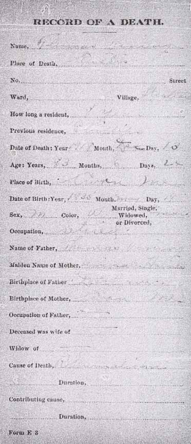
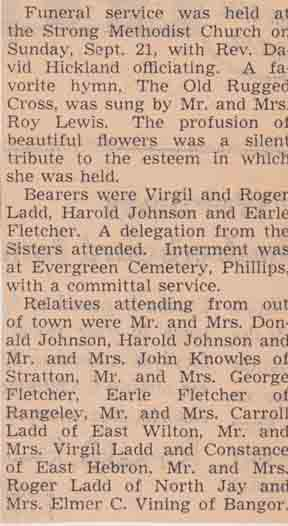

Birth Data
Birth record for Stella M. Vining, daughter of Thomas Vining and Releaf S. (Walker) Vining (from Maine State Archives):Census Data
| 1860 | 1870 | 1880 | 1890 | 1900 | 1910 | 1920 | 1930 | |
| Thomas Vining | 25 [see note below] |
35 | 45 | ? | 65 | 75 | dead | |
| Releaf S. (Walker) Vining | 31 | 41 | ? | 63 | 71 | 80 [see note below] |
dead | |
| Stella M. Vining | dead | |||||||
| Arthur L. Vining | 1 | 11 | ? | married and living in separate household | ||||
| Elmer Chandler Vining | 9 | ? | 27 | married and living in separate household | ||||
| Lula B. Vining | 2 | ? | married and living in separate household | |||||
| Eva E. Vining | ? | 19 | married and living in separate household |


Death Data
Death record for Thomas Vining (from Maine State Archives):
